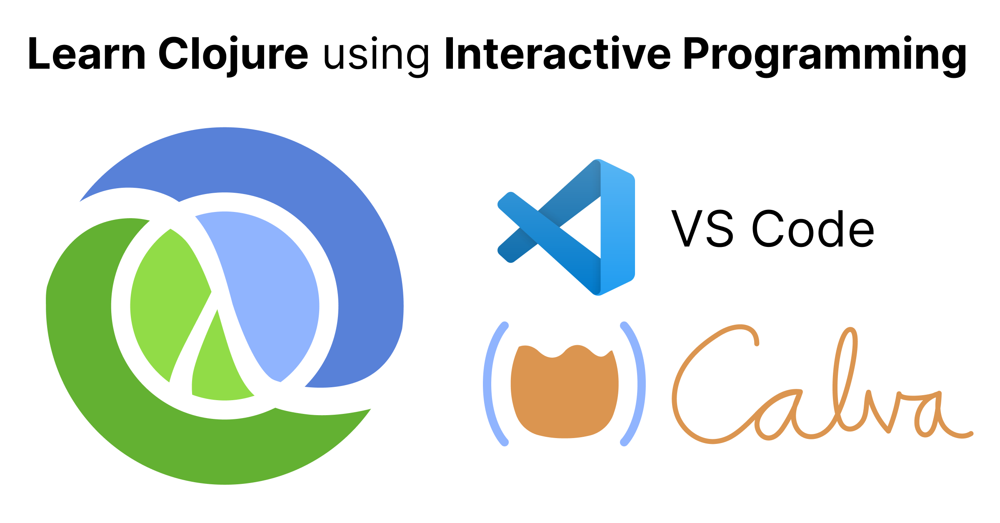
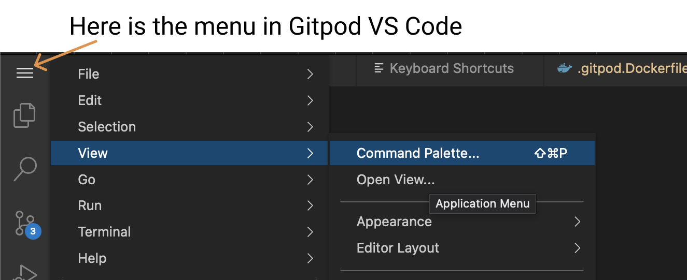

Get Started with Clojure

Welcome to a zero-install, interactive, guide to get you started with Clojure using:
- Clojure
- Gitpod (A development environment delivered via the web browser)
- VS Code (Or Gitpod Code, actually. In your web browser.)
- Calva (A Clojure extension to VS Code. The thing this site is about.)
- Calva's Getting Started REPL
I have VS Code and Java
Clojure runs on the JVM. How to install it is a big topic. Since you have already done that, you can, if you want, choose to install Calva in your local VS Code and fire up the Getting Started REPL. By all means read this page anyway, you can just skip the Gitpod parts.
Also: If you are using Windows your Java might have a bug that prevents things from working. Then you might want to defer fixing that and use the zero-install option first.
Is Gitpod Code exactly as VS Code?
Almost! But, yeah, there are some difference between regular VS Code and Gitpod's ditto. Most of it doesn't matter, but finding the main menu can be a bit tricky: 
What you'll learn
- The basics of the Clojure language (at least the start of the basics)
- The basics of the ClojureScript language (we won't be using ClojureScript, but it is same language 😀)
- The basics of Calva (It's a bit as a side effect. You need it to learn Clojure this way, and by learning Clojure this way, Calva knowledge trickles in.)
- What is meant by, and some ways to perform, Interactive Programming (aka REPL Driven Development)
- Where to find Clojurians, i.e. folks who use Clojure and care about it (you will thus find help, the friendliest help you have ever seen a community provide)
I am not convinced I should spend time on learning Clojure
Fair enough. We can recommend watching any or all of these videos to get excited about Clojure and the rather unique mood of development it offers:
- Solving Problems the Clojure Way - with Rafal Dittwald (using JavaScript, so no new syntax to grasp to get the message)
- Developer Ergonomics with VS Code, Clojure, and ClojureScript - with Peter Strömberg
- Clojure in VS Code Workflow using FizzBuzz - with Peter Strömberg
What you won't learn
- How to install Clojure for your operating system of choice
- About various old and new build and dependency tools
- How to create projects and do real stuff
Why won't I learn about this?
All in due time. 😄 It can be a bit confusing with all the things you find out about installing Clojure and creating projects when searching for information about it. We want you to relax about all that and just enjoy learning a bit about this fantastic programming language and the wonderful mode of development it offers.
There is a lot of info about this out there already. And since you will learn where to find Clojurians, you will also find guidance. But we suggest do these things later. First, let's focus on having fun with Interactive Programming!
What you need
- Curiosity about Clojure
- A web browser
The browser ate my keyboard shortcuts!
There is always a competition for which system gets to catch keyboard shortcuts first. This worsens a bit when an application like VS Code runs in the web browser. Remember this if some shortcut/command doesn't work.
On some machines, with some web browsers, some shortcuts are caught by the web browser and instead re-opening a closed tab or whatever. These have been observed:
- Undo (undoing something web browser related)
- Select the line (focusing the browser URL input)
- Open the command palette (opening a private browsing window. Looking at you Firefox.)
- Escape key shortcuts (are you using VIM bindings in your browser?)
Sometimes the workaround is to redefine the shortcuts in VS Code, sometimes making your web browser stop catching the shortcut.
I am new to VS Code
You might want to have a look at this Getting Started with VS Code video. (You can of course ignore the parts about installing for now.) Also, have this overview of the VS Code interface handy.
How it works
- You will open an instance of VS Code in a development environment running in the browser. The environment will have Java, Clojure tools, and Calva installed.
-
Gitpod Sign-in
You will be asked to sign in to Gitpod, if you aren't already. You need to use the ”Sign in with GitHub” option.
-
- Instructions will be automatically displayed (very brief such, because it is mainly about firing up the Getting Started REPL)
- The guides are a mix of prose (in Clojure line comments), Clojure code, and exercises. What's extra poetic is that you will use Calva and Clojure to learn Calva and Clojure.
Use a desktop/laptop computer. Even if it actually works on the phone, it is far from convenient.
It sometimes takes a while (several minutes) for the environment to initialize. Take some deep breaths and be patient. 😎
Let's go!
Ready? Awesome. Click this button to start the guide in a new browser tab.
Stuck? Something not working? Or just unclear?
Please don't hesitate to reach out for help, should you get stuck. See below for where to find Clojurians. As for the Calva team, we are almost always (true story) to be found at the Clojurians Slack, especially in the #calva Channel. We are @pez and @bringe there.
Happy Interactive Programming! ❤️
And where do I find those Clojurians?
We Clojurians inhabit a lot of community platforms. I'll list some of the more popular ones here in some order of popularity.
- The Clojurians Slack - by far the largest and most active Clojure community, the
#beginnerschannel is spectacularly fantastic - ClojureVerse - a web forum. Lots of Clojurians, lots of Clojure knowledge collected, easy to search, easy to join
- /r/Clojure - Reddit when Reddit is at its best, lots of Clojurians here
- Clojurians on Zulip - An other web forum using the Zulip platform
- On Discord there are two active servers: Clojurians and Discord
You can also ask questions, and find answers, about Clojure at ask.clojure.org
Learn and Practice Clojure using Rich 4Clojure
If you like the style of interactive learning that this guide provides, you should definitely check Rich 4Clojure out. It also can be used in the zero-installed way.
You can regard it as a companion to this guide. It is aimed at practicing Clojure, starting at the elementary levels, bringing you to advanced stuff.
Can I use Rich 4Clojure instead of this guide?
We suggest you start by opening up this guide and do the Calva part of the excerises. Then use the welcome_to_clojure.clj guide in combination with Rich 4Clojure..
Run the Clojure Exercism Track in your browser
In a similar manner to the Get Started with Clojure project, you can run the Clojure Exercism Track in your browser without installing anything and with full Interactive Programming enabled using this Template project.
ClojureDocs
Clojurians draw tremendous value from ClojureDocs. At ClojureDocs the concise documentation for Clojure core functions, etcetera, are amended with examples and advice from fellow Clojurians. Crowdsourcing at its very best! It is a big part of the reason why you won't find an abundance of Clojure information at StackOverflow.
Other learning resources
- Clojure Beginner Resources - a much more comprehensive list than this one
- clojure.org Getting Started - the source of truth, includes installing and stuff
- The Exercism Clojure track - Learn solving carefully crafted Clojure exercises, get mentor feedback if you like.
- Clojure for the Brave and True - helping you from beginner to pretty advanced stuff, very popular among Clojurians
- What do beginners struggle with? - a ClojureVerse thread, where you can tell us about what you have found hard in picking up Clojure. It's what spawned the creation of this guide.
- on the code again - often features Clojure concepts, with snappy, well communicated, and entertaining videos
- CalvaTV - Calva's YouTube channel often focuses on beginning with Clojure and ClojureScript. Subscribe, please!
Help us help beginners
Give us feedback. Spread the word. Please consider:
- Join the
#improve-getting-startedchannel at the Clojurian Slack - Linking to this page from your blog
- Tweeting about this guide
- Contributing to the Calva project
- Wearing Calva and RFC T-shirts
- Starring these repositories:
- Get Started with Clojure - (the repository powering this guide)
- Rich 4Clojure
- Clojure Exercism Track Template
- Calva
- Dram - Where this guide (the Getting Started REPL) is authored
Please also consider other ways to contribute.
Thanks! 🙏